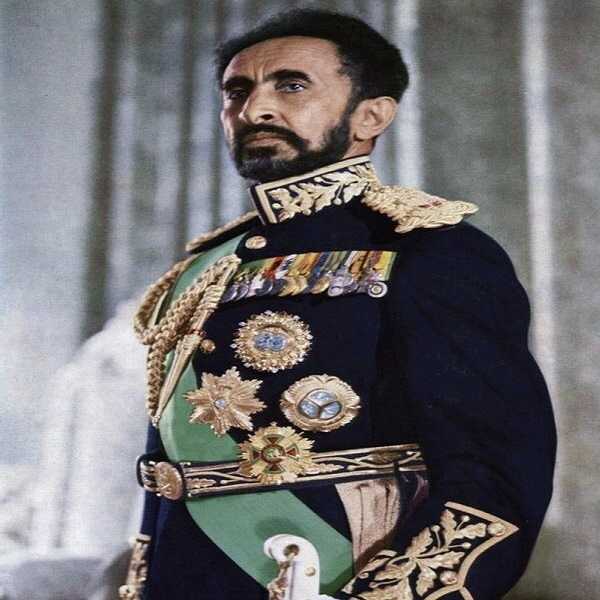

Ancient Egypt though was the first major African civilization. By 4000 BCE, Egyptians had begun cultivating crops. Five hundred years later, these peoples evolved into the early Egyptian states, and formed the great Egyptian civilization (with the unifying of Lower and Upper Egypt) in 3200 BCE. Egyptian society was complex. From the building of massive pyramids that still stand today to the development of hieroglyphics (a complex written language), to the creation of the plow, it profoundly shaped world civilization.Despite Egypt's early success, it was not until after 700 CE that sub-Saharan African empires could emerge and exist for longer periods of time.
With no society or civilization possessing a greater technological advantage, Africa's greatest empires fizzled and ultimately fell apart, often being replaced by another. Mali succeeded Ghana, and the Songhai followed Mali. Usually each empire improved upon the social, political, commercial, and military organization established by their predecessors, albeit in sometimes very different ways and over various parts of West Africa. By 1000 CE, states and civilizations emerged and thrived throughout the continent. These societies varied in structure as they evolved to suit local environmental, political and social situations. As time went on, West African societies grew into organized states that encompassed more of the area and its peoples. A map of Lower Guinea coastline (modern Ghana) from the early seventeenth century details close to forty different nation-states or kingdoms existing in the area. Roughly 120 years later, however, these states had merged to form one state, the Asante empire. In Southern Africa, the peoples of modern day Zimbabwe and Zambia created elaborate civilizations. Exploiting the mineral wealth of their land, these peoples traded with their neighbors and ultimately established a large network through the area.
These societies built permanent stone structures and houses over all of Africa. Great Zimbabwe was established around 1250 CE. Unique from other continents, some parts of Africa do not receive enough rainfall to grow large surpluses of domesticated crops, and population densities remained low as land could not produce enough food to support larger populations. As a result, precolonial civilizations were often more mobile societies that could move to more fertile land or closer to water supplies when needed. This was particularly true in the Eastern and Southern regions of the continent as well as in the Sahel and desert regions of West Africa. Pre-colonial communities were never completely isolated. Interaction between neighbors, across regions, and even outside of the continent were common. Societies interacted with one another through commerce, marriage, migration, diplomacy and warfare. Their fertile land, trade routes, or cattle forced interaction with other communities. East Africa was in contact with Chinese, Middle Eastern, and Indian traders. Portugal established Elmina (in modern day Ghana), its first African trading outpost, in 1482. Commerce was instrumental in state formation. Trade offered the ability to exchange local surpluses for rare foods and goods.
Across the Saharan desert and along the Swahili coastline of East Africa, vast trade networks developed. World renowned marketplaces and massive cities emerged at trade crossroads, such as Zanzibar and Timbuktu. For instance, it is estimated that Kumbi, a large city in the Western Sudan, possessed a population of 15 000 to 20 000 by the eleventh century. Kings and leaders, such as those of Ghana, controlled their areas’ local markets and received tributes from traders. Camels and donkeys connected distant societies, and allowed trade to occur across the Sahara. Areas with mineral wealth, such as Great Zimbabwe, developed mining capabilities and traded these for manufactured goods from overseas. With this said, there were more than 10 000 states and kingdoms before the arrival of the Europeans, and African civilizations varied greatly in size and structure. The structure can be divided into centralized and decentralized societies. In centralized societies often run by monarchs or rulers, authority was in the hands of an elite few that decided laws, collected taxes, etc. These societies tended to develop in areas conducive to agriculture or trade. The degree of power possessed by the emperor or monarch varied from group to group with some societies bestowing over-riding decision making responsibilities to the monarch while other leaders possessed more of a symbolic status.
The creation of divine rulers did not lead to the formation of structured states, but instead it was often the establishment of strong states that craved stronger governmental structures that necessitated the use of monarchs as leaders. In decentralized civilizations, such as the Igbo of modern day Nigeria and Kikuyu of Kenya, these societies were often broken up into age group systems, and power was dispersed throughout the entire community with local elders providing leadership but with input from the population at large. Some groups, such as the San of Southern Africa and the Pygmy of Central Africa, formed small, mobile groups of hunter-gathers that rarely ever grew larger than a handful of families. Hunting and gathering, herding cattle and goats, and agriculture were the primary means of food production throughout pre-colonial Africa. The earliest societies were hunter-gatherers. These groups often consisted of small kinship units that moved to follow animal herds or search for sources of water. However, with advancements in technology, civilizations developed ways to domesticate both animals and crops, and these advancements produced more regular levels of food. Food surpluses were more common, larger populations could be better supported, and thus, agriculture and herding soon became the dominant means of food production. As arable land came at a premium, farming or herding societies often pushed hunter-gatherers off of their land. Consequently, hunter-gatherers lost out on the best land, and such lifestyles became more difficult to maintain as time wore on. Even though agricultural societies could produce greater surpluses of food, farming was far from simple in most regions.
